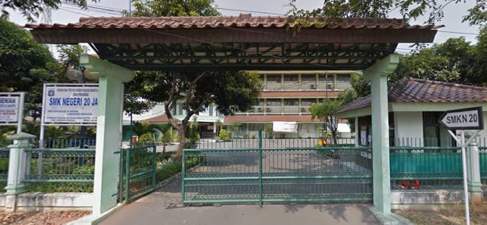
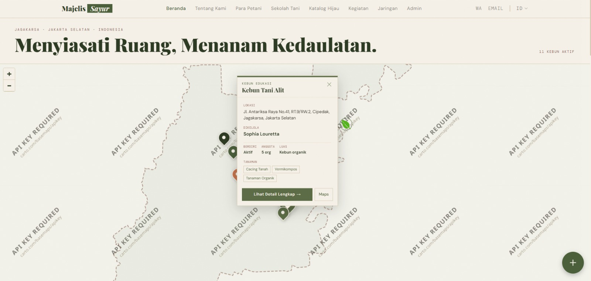
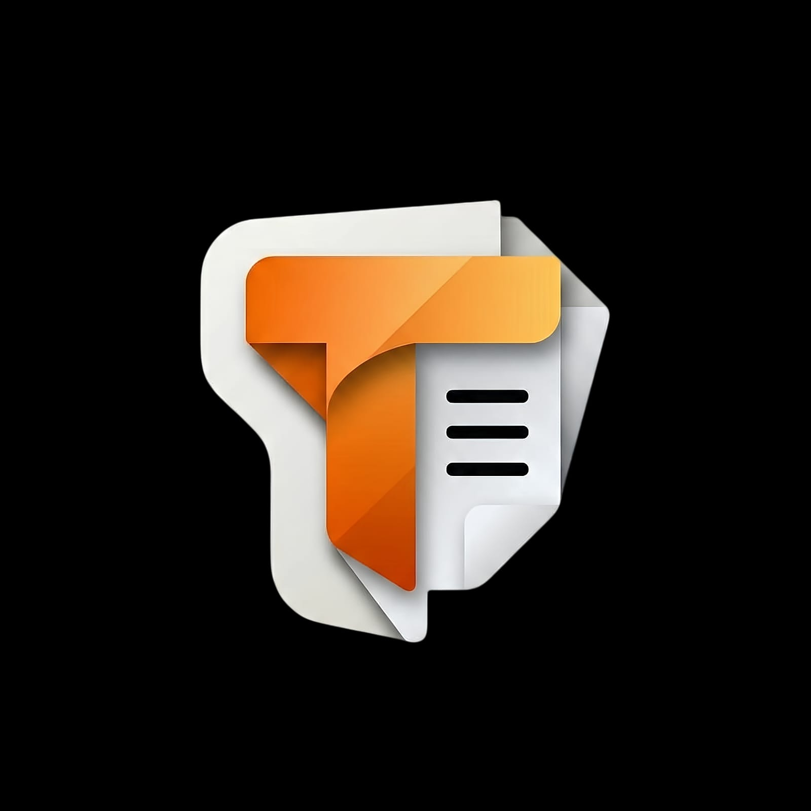
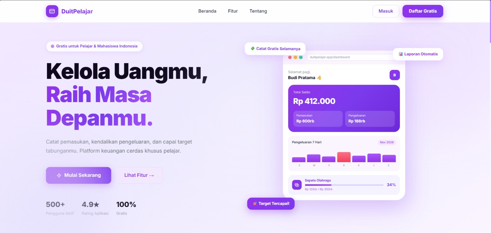

Perbankan
Perbankan
Hello, I'm
Mahardika Bintang
Software Engineer & Web Developer
"Crafting Code. Solving Problems. Building the Future." Siswa Rekayasa Perangkat Lunak dari SMKN 20 Jakarta yang antusias dalam merancang dan mengembangkan aplikasi web interaktif, modern, dan fungsional.
My Intro
Contact Me
About Me
Perkenalkan, saya Mahardika Bintang Ramadhan, siswa SMK jurusan Rekayasa Perangkat Lunak (RPL) di SMKN 20 Jakarta yang sangat tertarik pada dunia pemrograman, web development, dan desain antarmuka aplikasi.
Saya memiliki pengetahuan dalam pembuatan antarmuka responsif (UI/UX), logika pemrograman terstruktur, serta pengelolaan database relasional. Terbiasa bekerja secara mandiri maupun berkolaborasi dalam tim untuk memberikan hasil berkualitas tinggi.
Riwayat Pendidikan
-
SMKN 20 JAKARTA
2024 - Sekarang
Rekayasa Perangkat Lunak (RPL)
-
SMPN 212 JAKARTA
2021 - 2024
-
MI NURUL HIDAYAH PG
2015 - 2021
My Services
What I Do
Web Developer
Pengembangan website modern, interaktif, dan responsif menggunakan teknologi web standar terkini dengan performa cepat dan kode terstruktur.
UI/UX Designer
Perancangan antarmuka pengguna web dan mobile yang intuitif, estetis, dan ramah pengguna dengan fokus pada kemudahan navigasi serta konsistensi visual.
Software Engineering
Implementasi logika back-end, integrasi database MySQL, pengujian sistem, dan pemecahan masalah algoritma untuk menghasilkan aplikasi yang tangguh.
Favorite Skills
Skill Saya
Lihat secara lengkap keahlian dan kompetensi teknis yang saya kuasai untuk mengembangkan proyek aplikasi web berkualitas tinggi dan fungsional.
See Projects
01.
HTML & CSS
02.
JavaScript
03.
PHP & MySQL
04.
Tailwind CSS
05.
Git & GitHub
06.
UI/UX Design
07.
Responsive Web
08.
Problem Solving
Teknologi yang saya kuasai
HTML5
CSS3
JavaScript
PHP
MySQL
Tailwind CSS
My Work
Recent Projects
Perbankan

Galeri Web
UI/UX & Web
Web Application
Web KeuanganDUITPELAJAR - Sistem Pencatatan Keuangan Pelajar
DuitPelajar adalah aplikasi berbasis web yang dirancang untuk membantu pelajar mengelola dan memantau kondisi keuangan pribadi secara lebih mudah, terstruktur, dan efisien. Aplikasi ini memungkinkan pengguna mencatat pemasukan dan pengeluaran, mengatur anggaran, menetapkan target tabungan, serta memantau perkembangan keuangan melalui dashboard dan laporan keuangan.
Get in Touch